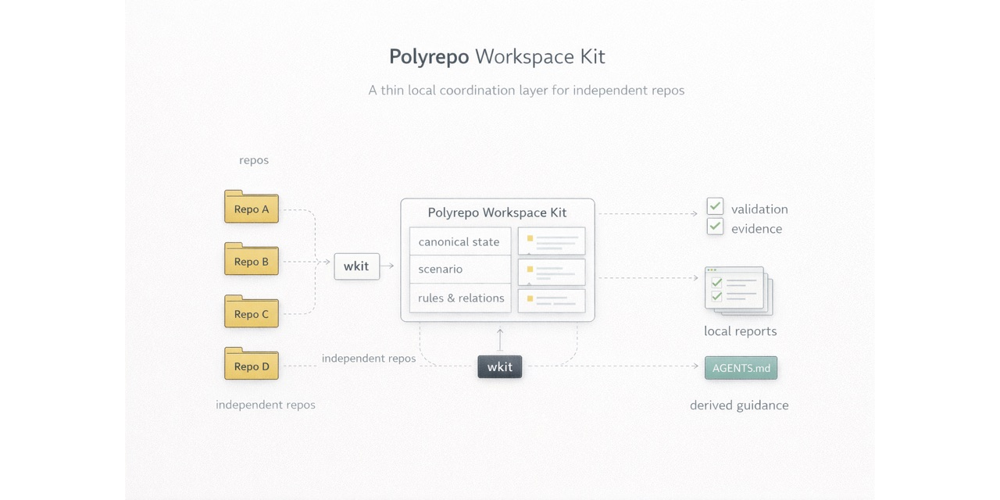

Coordinate repositories
Register repos, relationships, contexts, and active changes in workspace manifests that are readable and reviewable.
Source-first Go CLI for local workspaces
A thin coordination layer for local polyrepo workspaces, cross-repo validation, and generated coding-agent guidance.
go install github.com/johnkil/polyrepo-workspace-kit/cmd/wkit@latest
The project helps humans and coding agents share one explicit workspace model without pretending every repository belongs in a monorepo or in a hosted portal.
Register repos, relationships, contexts, and active changes in workspace manifests that are readable and reviewable.
Capture repo-local checks as scenario snapshots and write local evidence reports for handoff and review.
Install derived repo-scope guidance for portable agents, Codex, OpenCode, Copilot, and Claude from canonical workspace sources.
Canonical truth lives in manifests and guidance sources. Adapter files are generated outputs, not a second source of truth.
Repos, contexts, relationships, rules, and live changes.
Reviewable local validation snapshots with explicit repo pins.
Machine-local checkout paths kept out of shared canonical state.
Derived guidance files installed into real tool discovery paths.
The landing page is only a doorway. The repository remains the product source of truth.